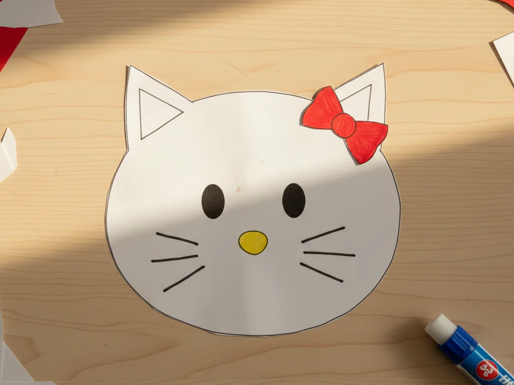
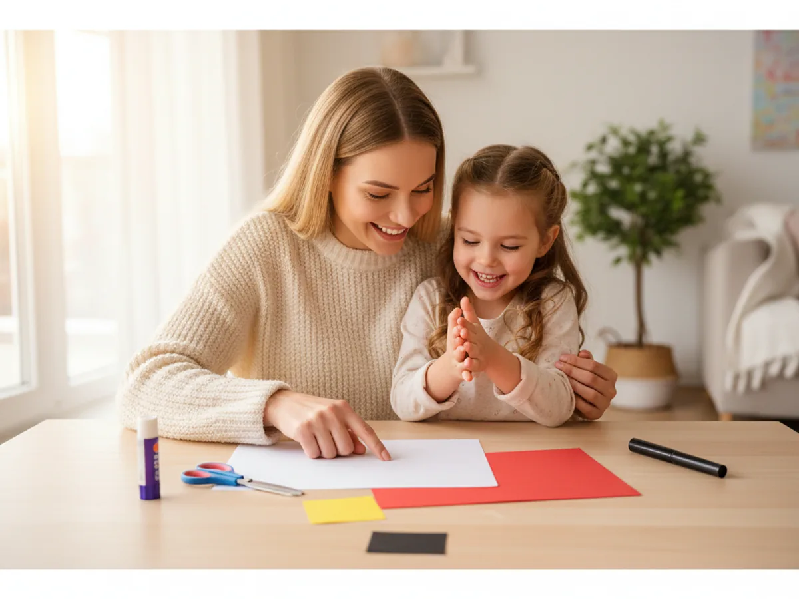
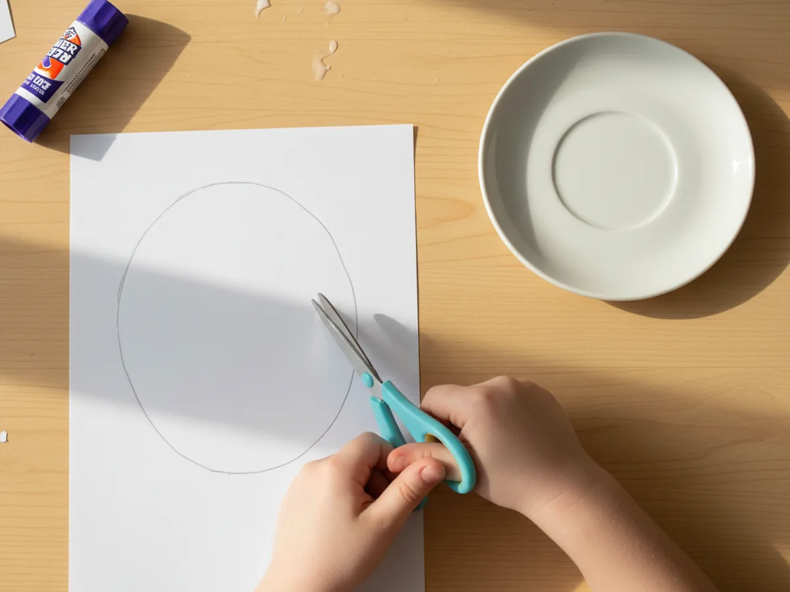
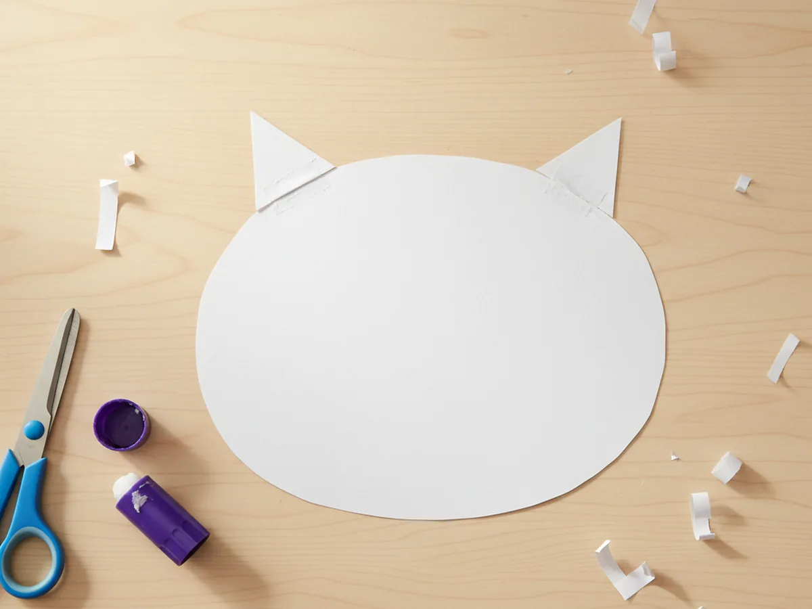
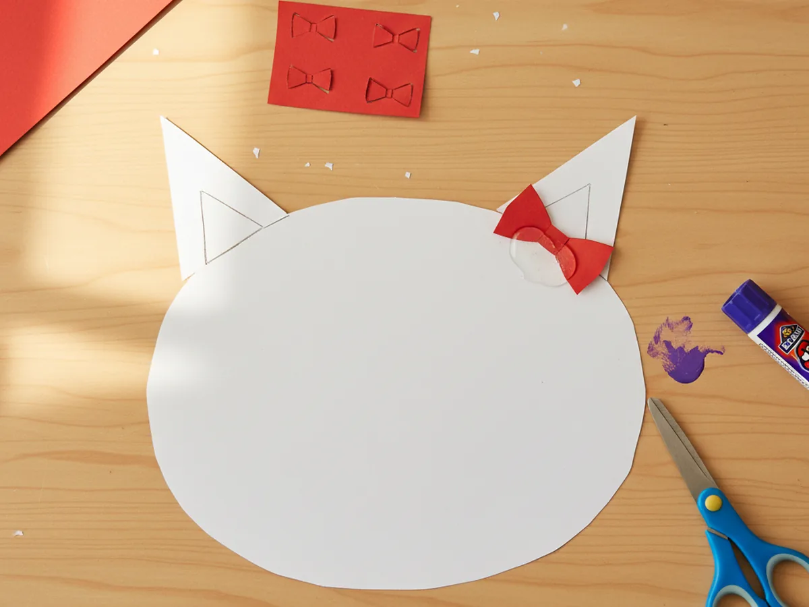
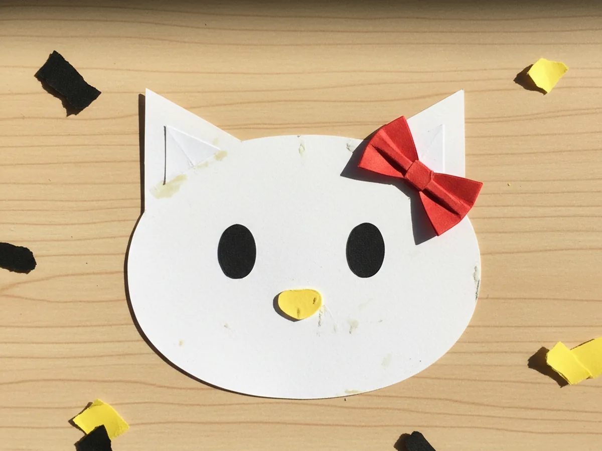
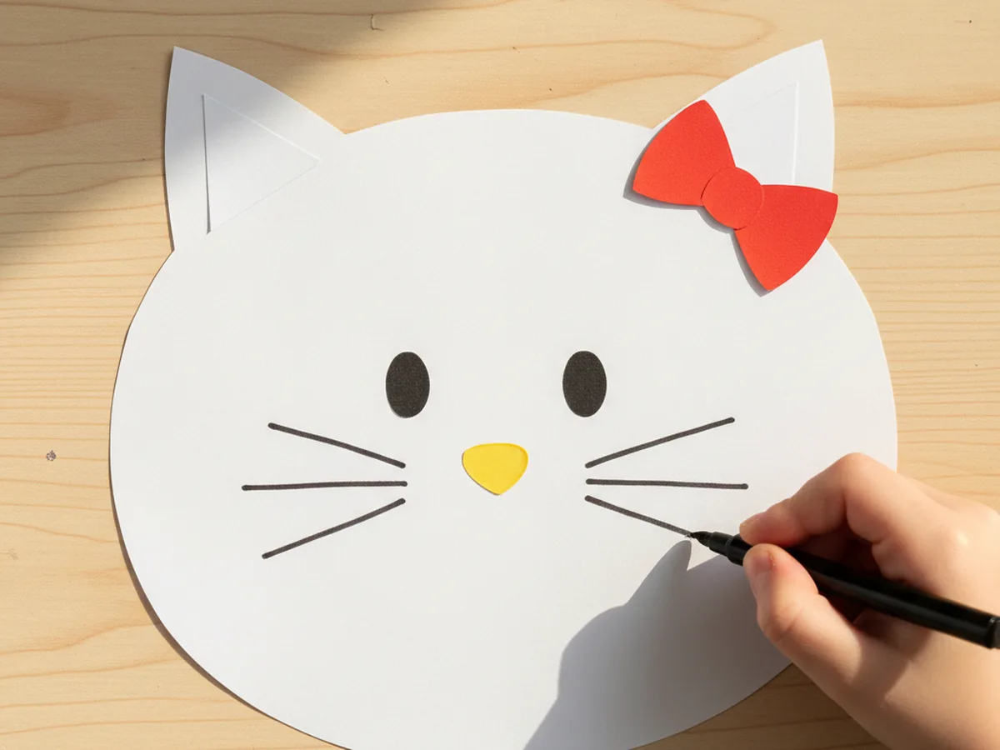

If your little one is in their Hello Kitty era, this hello kitty paper craft is going to be such a joyful afternoon for both of you. 🎀 With just a few sheets of construction paper, a glue stick, and a black marker, you can turn a simple kitchen-table moment into a sweet shared activity that ends with the cutest little white kitty face beaming back at you. No fancy templates, no tricky folding, no special skills needed.
The magic of this easy hello kitty paper craft is how quickly that iconic kitty starts to take shape. The moment the two pointy ears go on and the little red bow is glued into place, your child will gasp. It just looks like her. Whether your kid is four or nine, this is one of those projects that feels almost too easy for how cute the finished result turns out.
Why Kids Love This Craft
There is something so satisfying about recreating a character a child already adores. A hello kitty paper craft gives little ones the joy of holding their favorite kitty in their own hands, made with their own scissors and glue. They get to be the one in charge of giving her a bow, drawing her whiskers, and choosing whether her bow is red, pink, polka-dotted, or sparkly. That sense of ownership is huge for young kids.
From a developmental side, this paper hello kitty craft is a gentle little workout for fine motor skills. Tracing an oval, cutting small triangle ears, and gluing on a tiny bow all build hand control and patience in the sweetest way. The steps are simple enough that ages 4 and up can do most of it independently, with only a tiny bit of help on the smallest pieces.
And the emotional payoff is real. Watching a child light up when their flat white oval suddenly becomes a recognizable kitty character is the kind of moment moms remember. The finished face is the perfect size for taping to a bedroom door, sticking on the fridge, or popping into a little homemade card for a friend's birthday. 💕

What You'll Need
Here is everything you need to make this cute hello kitty paper craft at home. Lay it all out before you start so the activity flows smoothly from beginning to end.
- Crayola Construction Paper (240 sheets, assorted colors), you will use the white, red, yellow, and black sheets from this assorted pack.
- Elmer's Disappearing Purple Glue Sticks (30-pack), washable and easy for small hands to handle.
- Fiskars 5-Inch Pointed-Tip Scissors for Kids, perfect for ages 4 and up; use round-tip safety scissors for younger children.
- Crayola Broad Line Markers (10 Classic Colors), for drawing the whiskers and any final details.
- A pencil, for tracing the oval head shape.
- A small plate or bowl, optional, for tracing a smooth oval.
Step-by-Step Instructions
This hello kitty paper craft step by step is gentle and easy to follow, even on the very first try. Work through each step together and let your child take the lead wherever they feel confident.
Step 1: Cut the Kitty's Head
Start with a sheet of white construction paper. Use a pencil to trace a large oval that is slightly wider than it is tall. A small dessert plate or a cereal bowl flipped upside down is perfect for tracing a nice smooth oval. Once the shape is traced, have your child cut it out along the pencil line. The size should be roughly as big as your child's hand with fingers spread out, which gives plenty of room for the eyes, nose, and bow later on.
For children ages 4 to 5, trace the oval for them first so they can focus all their energy on the satisfying part of cutting it out. Slightly uneven edges actually give the finished kitty a charming homemade look that you can never quite replicate with a printed template.

Step 2: Cut and Attach the Ears
From the same white construction paper, cut two small triangles for the ears. They should be roughly the size of a quarter at the base, with one pointy tip. They do not need to be identical. Apply a thin line of glue stick along the flat bottom edge of each triangle, then press one onto each upper corner of the oval head so the pointy tips stick up above the curve of the head.
Hold each ear in place for a few seconds to let the glue catch. As soon as those two little triangles go on, the oval transforms. Your child will know exactly who they are making, and that recognition moment is one of the best parts of this whole hello kitty paper craft.

Step 3: Make and Glue the Bow
Now for the most exciting part. Take a small piece of red construction paper and cut a simple bow shape: two small triangles meeting in the middle, with a tiny rectangle wrapped around the center. If that feels fiddly, an even simpler version works beautifully: cut a small bow tie shape that looks like two triangles touching at the tips. Glue it on top of the right ear so it tilts proudly to one side.
This little detail is what truly turns the craft into a recognizable kitty. Encourage your child to pick whichever color bow speaks to them, whether that is classic red, soft pink, bright yellow, or polka-dotted. There is no wrong answer here, and the freedom to choose makes the project feel like theirs.

Step 4: Add the Eyes and Nose
From the black construction paper, cut two small oval shapes for the eyes. They should be roughly the size of a small pea, not too big. Then from the yellow paper, cut one slightly larger oval for the nose. Glue the two black eyes about halfway down the face, spaced a little wider apart than you might think looks right, since wide-set eyes are part of what gives this hello kitty paper craft its signature gentle look. Glue the yellow nose oval directly below and centered between the two eyes.
Press each piece down firmly with a fingertip for a few seconds so the glue sets. Take a moment here to step back and look at your kitty together. The personality is really starting to shine through, and your little one will love seeing it come to life. 😊

Step 5: Draw the Whiskers and Finishing Touches
This is the final step, and it is the one that completes the whole face. Using a black marker, draw three short straight whiskers fanning outward from each side of the yellow nose, so the kitty has three whiskers on the left and three on the right. Keep them short and roughly the same length on each side. The whiskers should sit at about nose level, not too high and not too low.
Once the whiskers are on, your child can add any final personal touches they want: tiny eyelashes above the eyes, a little pink blush on the cheeks with a colored pencil, polka dots on the bow, or even a small bow on the opposite ear for a "twin bow" look. There is so much room here for creativity, and every kitty ends up wonderfully unique. 🌷

Variations to Try
Pastel Birthday Kitty: Make several kitty faces using pastel pink, lavender, and mint green paper instead of plain white, and pop them on top of straws or popsicle sticks to create adorable cupcake toppers for a birthday party. Each kitty can have a different colored bow for a sweet rainbow effect.
Hello Kitty Bookmark: Glue the finished kitty face onto the top of a long rectangle of cardstock to create the cutest reading bookmark. You can even punch a small hole at the bottom and add a little tassel of ribbon for a finishing touch your child will love using every day.
Greeting Card Version: Fold a sheet of pink or pastel cardstock in half to make a small card, then glue the finished kitty onto the front. Inside, your child can write a short note for a grandparent, a friend, or a teacher. The handmade quality makes it the kind of card people keep forever.
Final Thoughts
This hello kitty paper craft really is one of those projects that delivers way more joy than the effort it takes. It comes together in about 25 minutes from start to finish, uses materials you probably already have at home, and gives your little one that wonderful feeling of having made something that looks like their favorite character. The mess is minimal, the steps are gentle, and the finished face is genuinely cute enough to be proudly displayed for weeks afterward. 🎀
If your child makes their own paper kitty, I would love to see it. Share a photo on Pinterest and pin this article so other families can find it too. Happy crafting!
More Crafts You'll Love
If your little one had fun making this paper kitty, these other adorable character paper crafts are just as easy and just as cute: